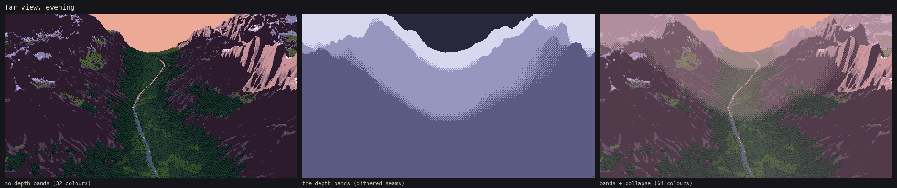
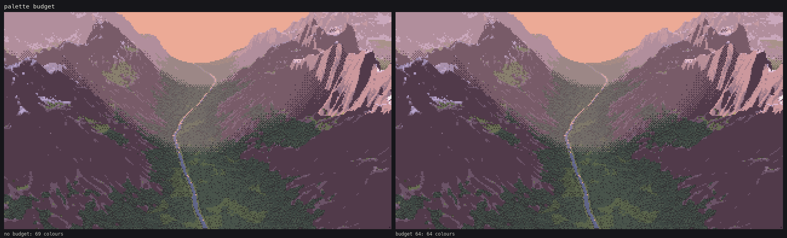
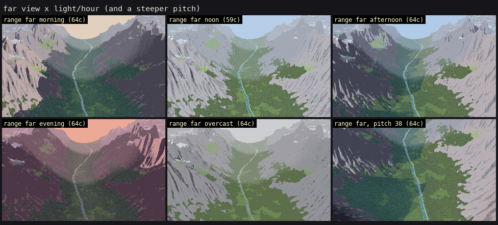
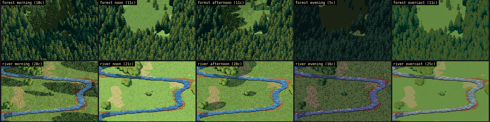

How-to 4: The far view: haze, bands and palette economy
Back to the field guide. Code: ~/work/pixelart-studies/aerial/lib/painter.py (bands, cavity tone, band collapse, sky), lib/pal.py (lights, haze, budget), lib/subjects.py: range_valley. Plates: plates/range_far*.png. Sheet: sheets/sheet_far.png.
This is how the evening range was made: a perspective camera 3.3 km up, pitched 24° down over a 9 km range with a glacial valley and a river. The plate below was the one singled out.

1. What the photos say
Measured row by row down a high oblique (Blue Ridge, how-to 1), from near to far:
- the black point rises from L* 0.5 to 48;
- the value range collapses from 45 to 9;
- b* goes from 0 to −14, turning blue.
Far land is two close, lifted, blue values, a lit and a shade. That's also how Ferrari's far masses behave: the master-copy student found that his lit colour holds with distance and his shadow colour shifts.
2. Depth bands, with dithered seams
Split the ray distance into bands (here 2.5, 4.5 and 7 km), and give each band a haze mix toward the light's haze colour (0 / 22 / 45 / 68%). Mixing toward a light haze lifts the black point first and compresses the range, as measured.
band = band_of(G["t"] * (1 + (thr_4 - 0.5) * 0.06), bands) # jitter distance by a Bayer threshold: dithered seams
...
def haze_mix(rgb, light, f):
return rgb * (1 - f) + light.haze * f
The band edges have to be dithered, or each one is a hard milky ring across the valley (notebook 083). The jitter amount matters. At 14% the seams were wide checker bands that looked like smoke (084), and at 6% they're a one- or two-pixel dither.

code/figs.py far, evening. Left: no depth bands, a dark heavy picture in 32 colours. Middle: the band map, where the lightest grey is the farthest band (the sky is band 0 and shows darkest). Right: with bands, band collapse and the budget, 64 colours. The near valley keeps its full range, and the far peaks go to two lifted violet values.
3. Band collapse
Aerial perspective removes steps, not just contrast. So in band 2 each material keeps only its two family tones plus its darkest accent, and in band 3 only lit and shade:
for b_ in (2, 3):
mb = (cv.band == b_) & (cv.mat > 0) & (cv.mat != MAT_ID["sky"])
for m_ in np.unique(cv.mat[mb]):
n_ = MATERIALS[[k for k, v in MAT_ID.items() if v == m_][0]]["steps"]; ns_ = n_ // 2
sel = mb & (cv.mat == m_); st_ = cv.step[sel]
lo_keep = 0 if b_ == 2 else ns_ - 1
cv.step[sel] = np.where(st_ >= ns_, np.minimum(st_, ns_ + 1), np.maximum(np.minimum(st_, ns_ - 1), lo_keep))
This happens on the index canvas, so it's independent of the hour.
4. Cavity tone draws the mountain
At a few km, n·l alone gives mountains as soft blobs. What draws their structure is concavity: the height minus a blurred height. Gullies go one step down in both families. Spurs go one step up, in the light only. The threshold scales with the metres per pixel, so it picks forms a few pixels wide at any distance:
cav = cc < -np.clip(G["mpp"] * 2.5, 2.0, 40.0)
s = np.where(m & cav, np.maximum(s - 1, lo), s)
rid = cc > np.clip(G["mpp"] * 2.5, 2.0, 40.0)
s = np.where(m & rid & lit, np.minimum(s + 1, hi), s)
The streaks on the evening flanks, dark gullies and pink spurs, are this.
5. Things that disappear at distance
- The river was 30 m wide, under a pixel, and it vanished (083). I widened it to 90 m. A far view needs a subject that is at least a pixel wide where it matters, and that's the scene's job. The water technique (how-to 3) then does the rest: at grazing angles the mirror shows sky, so the river is a thread of light.
- Trees. The far view never instances trees. The forest is its cover field raised by the tree height and painted as a canopy surface (how-to 2 §4).
6. Palette budget
After band collapse the frame still used 80 colours, and 86 with the dithered seams. pal.limit_palette merges the closest pair of colours in Lab, weighted so that rare colours go first, into the more used one, until the budget is met:
D = np.linalg.norm(L[idx, None] - L[None, idx], axis=-1) + np.eye(len(idx)) * 1e9
D = D * np.sqrt(np.minimum(cnt[idx][:, None], cnt[idx][None, :])) # rare pairs are cheap to merge
i, j = np.unravel_index(np.argmin(D), D.shape)

On the evening plate it merges only 5 of 69 colours, and you can't see the difference. Band collapse does the real economy. The budget is a safety net for the rest.
7. One canvas, every hour
The index canvas stores the form, and the palette is the light, so every hour is a palette swap. The light states are in pal.LIGHTS: sun altitude and azimuth, sun colour, sky ambient, and haze colour. The sky colours are in pal.SKY, and the afternoon one was measured on the Cosumnes photo.

The range at morning, noon, afternoon, evening and overcast, plus a steeper 38° pitch.

The same idea on the iso subjects (the top of sheet_light): each row is one index canvas, each column one palette.
A painter's choice, not a measurement. At low sun the physically computed forest was five colours of near-black. The photos really are that dark (Deer Mountain at dawn: canopy median L* 8), but it wasn't a painting. I raised the morning and evening sky ambient (evening sky=(0.30, 0.25, 0.50)). That's a Ferrari move: his shadows are always coloured and never dead. The evening forest cells in sheet_light are still my weakest.
Where it breaks
- My range is more alpine (more rock) than the green valley photo it's judged against in
plate_range_far. That's the subject builder, not the painter. - On flat valley floors the dithered band seams show as faint rings.
- Far snow is salt-and-pepper (
plate_cirque_far). The snow mask is thresholded noise, and at distance it needs its own simplification.